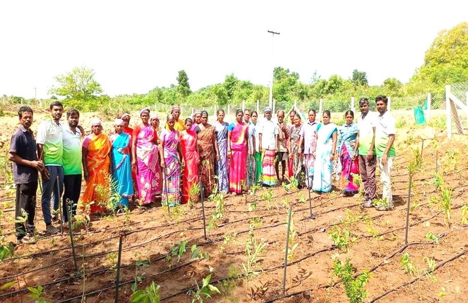

Lend Your Hands
Become a Volunteer
You don't need experience — just the willingness to get your hands a little muddy for a greener tomorrow.
Home / Volunteer
Why Volunteer
Small hands, big forests
Every forest we've grown started with volunteers like you. Whether you can give one morning or every weekend, your time creates real, lasting change.
Plant & nurture
Join plantation drives, water saplings and help build Miyawaki forests.
Teach & mentor
Support children in our adopted schools with lessons, books and care.
Spread the word
Use your skills — photography, design, social media — to grow the movement.
Thank you for registering, friend! 🌱
Welcome to the Karisakattu Poove family. Your details are saved and our team will reach out with the next drive near you.
Volunteer Impact
What our family has grown
0+
Active Volunteers
0
Drives Held
0+
Volunteer Hours
0
Villages
0
Schools